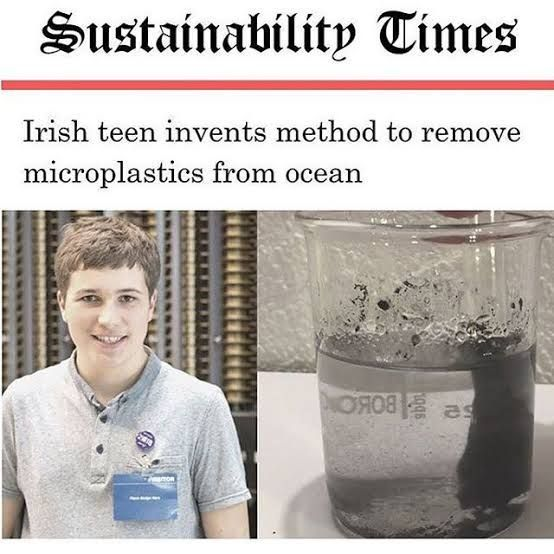

SOLUTION
เนื่องจากพลาสติกจะถูกย่อยจากแบคทีเรียได้แค่บนบก เพราะบนบกมีอุณหภูมิสูงกว่า ซึ่งแบคทีเรียสามารถอาศัยอยู่ได้ แต่ในทะเลมีอุณหภูมิต่ำกว่า แบคทีเรียจึงอาศัยอยู่ไม่ได้
ดังนั้นวิธีแก้ไขปัญหาที่เป็นไปได้มี 3 วิธี
1. 3R-Reduce Reuse Recycle
2.รณรงค์แยกขยะ (อาจเพิ่มกฎหมายให้คนแยกขยะ มิฉะนั้นจะถูกปรับ ฯลฯ)
3. หลีกเลี่ยง Microbeads (พลาสติกเล็กๆจากพวกเครื่องสำอาง) ไปใช้สครับจากเกลือ มะขามเปียก หรือผงถั่วเขียวแทน
4.มีโครงการวิจัยแยกไมโครพลาสติกออกจากน้ำ โครงการวิจัยของเฟอร์เรร่า ใช้เฟอร์โรฟลูอิดส์ ซึ่งเป็นสารประกอบร่วมระหว่างน้ำมันกับผงแม่เหล็กและตัวแม่เหล็กในการดึงไมโครพลาสติกออกจากน้ำ และจากการทดสอบร่วมพันครั้ง เฟอร์เรร่าสามารถแยกตัวอย่างน้ำที่มีไมโครพลาสติกปนเปื้อนได้สำเร็จถึง 87%
